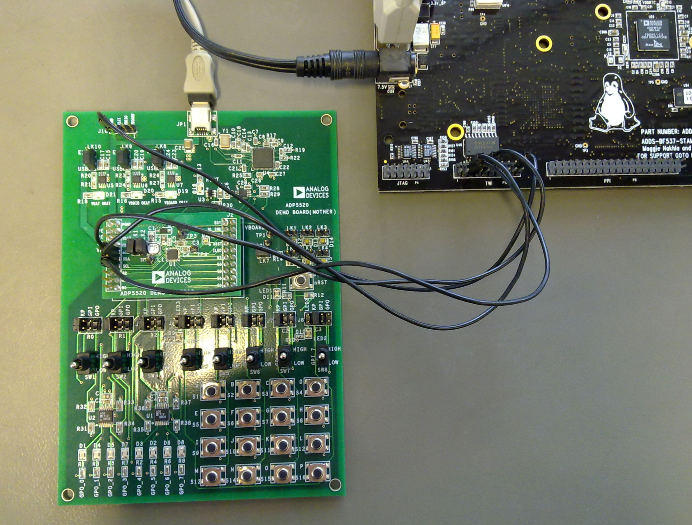

ADP5520/01 MFD Linux Driver¶
Supported Devices¶
Evaluation Boards¶
Description¶
The ADP5520/01 driver utilizes several Linux device-driver subsystems and provides various software interfaces. It is therefore implemented as a multifunction device (MFD). In this particular case the ADP5520 backlight driver and I/O expander, concurrently leverages the Linux backlight, LED, GPIO, and input subsystems for its keypad functionality.
Core¶
The ADP5520/01 core driver in drivers/mfd provides common services for the subsystem drivers. These services include register access, control and shared interrupt management.
The core registers/enumerates platform devices for the various subsystems via the platform device and driver system.
When a platform driver for one of the subsystems is instantiated, the core initializes the chip (which may be specified by the platform data).
The ADP5520/01 platform drivers follow the standard driver model convention, where discovery/enumeration is handled outside the drivers, and drivers provide probe() and remove() methods.
Resources¶
Each peripheral (subsystem device) has a view of the device which is implicitly narrowed to the specific set of resources that peripheral requires in order to function correctly.
Configuration¶
The device driver uses a set of platform data to pass configurations through to the core and the subsidiary drivers so that there can be support for multiple ADP5520/01 devices built into a single kernel image.
Software configurable features¶
Backlight:
Ambient Light Sensor Support
Configurable Fade On/Off times
Configurable Brightness/Intensity in 127 steps
LED:
Up to 3 LEDs configurable
Configurable Fade On/Off times
LED Blink On/Off times
Configurable Brightness/Intensity in 64 steps from [0…255]
Keypad:
Configurable keypad size matrix (rows, columns) up to 16 keys
Enabling and disabling automatic key repeat feature.
GPIO:
Configurable number of dedicated GPIOs, up to 8 GPIOs
Configurable Pull-Ups
Source Code¶
Status¶
| Source | Mainlined? |
|---|---|
| git | Yes |
Files¶
| Function | File |
|---|---|
| MFD-CORE | drivers/mfd/adp5520.c |
| include | include/linux/mfd/adp5520.h |
| BACKLIGHT | drivers/video/backlight/adp5520_bl.c |
| LED | drivers/led/leds-adp5520.c |
| GPIO | drivers/gpio/adp5520-gpio.c1 |
| KEYPAD | drivers/input/keyboard/adp5520-keys.c2 |
Example platform device initialization¶
Note
Since Keypad, GPIO and optional LEDs (2, 3) are multiplexed, you need to avoid double configurations. Please refer to the table below.
| ADP5520 PIN | R3 | R2 | R1 | R0 | C0 | C1 | C2 | C3 |
|---|---|---|---|---|---|---|---|---|
| GPIO | GPIO_R3 | GPIO_R2 | GPIO_R1 | GPIO_R0 | GPIO_C0 | GPIO_C1 | GPIO_C2 | GPIO_C3 |
| Keypad | ROW_R3 | ROW_R2 | ROW_R1 | ROW_R0 | COL_C0 | COL_C1 | COL_C2 | COL_C3 |
| LED | LED3 | LED2 |
Note
Please refer to include/linux/mfd/adp5520.h for detailed configuration defines.
Backlight¶
LED¶
GPIO¶
Keypad¶
ADP5520/ADP5501 MFD Core Support¶
Note
ADP5520 IRQ Usage: If you aren’t planning to utilize the Keypad interface, you don’t need to specify an IRQ in bfin_i2c_board_info.
Adding Linux driver support¶
Fist of all you need to enable i2c support followed by the ADP5520 MFD Core Driver. Then you may select individual components like LCD backlight, LEDs, GPIOs and Keypad under the corresponding menus.
ADP5520 MFD Core Support¶
Device Drivers --->
<*> I2C support --->
<*> Blackfin TWI I2C support
Or:
<*> GPIO-based bitbanging I2C
Device Drivers --->
Multifunction device drivers --->
[*] Analog Devices ADP5520/01 MFD PMIC Core Support
Backlight¶
Device Drivers --->
Graphics support --->
[*] Backlight & LCD device support --->
<*> Lowlevel Backlight controls
<M> Backlight Driver for ADP5520/ADP5501 using WLED
LED¶
Device Drivers --->
[*] LED Support --->
<*> LED Class Support
<M> LED Support for ADP5520/ADP5501 PMIC
GPIO¶
Device Drivers --->
[*] GPIO Support --->
[*] /sys/class/gpio/... (sysfs interface)
<M> GPIO Support for ADP5520 PMIC
Keypad¶
Device Drivers --->
Input device support --->
<*> Generic input layer (needed for keyboard, mouse, ...)
<*> Event interface
[*] Keyboards --->
<M> Keypad Support for ADP5520 PMIC
Hardware configuration¶
{kind=link}
There is no dedicated Blackfin STAMP evaluation board for the ADP5520. During test and driver development we used the ADP5520 Demo Mother/Daughter Board. Connect the ADP5520 Demo Mother to an USB port.
It can be easily wired to the Blackfin STAMP TWI/I2C header.
| BF537-STAMP (P10) TWI/I2C header | ADP5520 Daughter Board | |
|---|---|---|
| PIN | Function | PIN/Function |
| 5 | SCL | SCL |
| 6 | SDA | SDA |
| 10 | GPIO_PG0 | nINT |
| 20 | GND | GND |
Driver testing¶
Backlight¶
root:/> **modprobe adp5520_bl**
root:/>
root:/> cd sys/class/backlight/adp5520-backlight/
root:/sys/devices/platform/i2c-bfin-twi.0/i2c-adapter/i2c-0/0-0032/backlight/adp5520-backlight> ls -l
-r--r--r-- 1 root root 4096 Nov 12 10:31 actual_brightness
-rw-r--r-- 1 root root 4096 Nov 12 10:31 bl_power
-rw-r--r-- 1 root root 4096 Nov 12 10:31 brightness
-rw-rw-r-- 1 root root 4096 Nov 12 10:31 dark_dim
-rw-rw-r-- 1 root root 4096 Nov 12 10:31 dark_max
-rw-rw-r-- 1 root root 4096 Nov 12 10:31 daylight_dim
-rw-rw-r-- 1 root root 4096 Nov 12 10:31 daylight_max
lrwxrwxrwx 1 root root 0 Nov 12 10:31 device -> ../../../0-0032
-r--r--r-- 1 root root 4096 Nov 12 10:31 max_brightness
-rw-rw-r-- 1 root root 4096 Nov 12 10:31 office_dim
-rw-rw-r-- 1 root root 4096 Nov 12 10:31 office_max
drwxr-xr-x 2 root root 0 Nov 12 10:31 power
lrwxrwxrwx 1 root root 0 Nov 12 10:31 subsystem -> ../../../../../../../../class/backlight
root:/sys/devices/platform/i2c-bfin-twi.0/i2c-adapter/i2c-0/0-0032/backlight/adp5520-backlight> **echo 127 > brightness**
root:/sys/devices/platform/i2c-bfin-twi.0/i2c-adapter/i2c-0/0-0032/backlight/adp5520-backlight> **echo 50 > brightness**
root:/sys/devices/platform/i2c-bfin-twi.0/i2c-adapter/i2c-0/0-0032/backlight/adp5520-backlight> **echo 0 > brightness**
For more information on Backlight handling in Linux read: Documentation/ABI/stable/sysfs-class-backlight
LED¶
root:/> **modprobe leds-adp5520**
Registered led device: adp5520-led1
Registered led device: adp5520-led2
Registered led device: adp5520-led3
root:/> cd sys/class/leds/adp5520-led
sys/class/leds/adp5520-led1/ sys/class/leds/adp5520-led3/
sys/class/leds/adp5520-led2/
root:/> cd sys/class/leds/adp5520-led1
root:/sys/devices/platform/i2c-bfin-twi.0/i2c-adapter/i2c-0/0-0032/leds/adp5520-led1> ls -l
-rw-r--r-- 1 root root 4096 Nov 12 10:34 brightness
lrwxrwxrwx 1 root root 0 Nov 12 10:34 device -> ../../../0-0032
drwxr-xr-x 2 root root 0 Nov 12 10:34 power
lrwxrwxrwx 1 root root 0 Nov 12 10:34 subsystem -> ../../../../../../../../class/leds
-rw-r--r-- 1 root root 4096 Nov 12 10:34 trigger
root:/sys/devices/platform/i2c-bfin-twi.0/i2c-adapter/i2c-0/0-0032/leds/adp5520-led1> **echo 10 > brightness**
root:/sys/devices/platform/i2c-bfin-twi.0/i2c-adapter/i2c-0/0-0032/leds/adp5520-led1> **echo 255 > brightness**
root:/sys/devices/platform/i2c-bfin-twi.0/i2c-adapter/i2c-0/0-0032/leds/adp5520-led1> **echo 0 > brightness**
root:/> **modprobe -r leds-adp5520**
root:/>
For more information on LEDs handling in Linux read: Documentation/leds-class.txt
GPIO¶
root:/> **modprobe adp5520-gpio**
root:/> cd sys/class/gpio/gpiochip50/
root:/sys/devices/virtual/gpio/gpiochip50> ls -l
-r--r--r-- 1 root root 4096 Nov 12 10:37 base
-r--r--r-- 1 root root 4096 Nov 12 10:37 label
-r--r--r-- 1 root root 4096 Nov 12 10:37 ngpio
drwxr-xr-x 2 root root 0 Nov 12 10:37 power
lrwxrwxrwx 1 root root 0 Nov 12 10:37 subsystem -> ../../../../class/gpio
-rw-r--r-- 1 root root 4096 Nov 12 10:37 uevent
root:/sys/devices/virtual/gpio/gpiochip50> cd
root:/>
Note that you will have to enable the event_test utility under “Blackfin test programs” in your user space configuration.
For more information on GPIO handling in Linux read: Documentation/gpio.txt
Keypad¶
root:/> **modprobe adp5520-keys**
input: adp5520-keys as /devices/platform/i2c-bfin-twi.0/i2c-adapter/i2c-0/0-0032/adp5520-keys.5520/input/input0
root:/> **event_test /dev/input/event0**
Input driver version is 1.0.0
Input device ID: bus 0x18 vendor 0x1 product 0x5520 version 0x1
Input device name: "adp5520-keys"
Supported events:
Event type 0 (Reset)
Event code 0 (Reset)
Event code 1 (Key)
Event type 1 (Key)
Event code 2 (1)
Event code 3 (2)
Event code 4 (3)
Event code 5 (4)
Event code 6 (5)
Event code 7 (6)
Event code 8 (7)
Event code 9 (8)
Event code 10 (9)
Event code 11 (0)
Event code 12 (Minus)
Event code 13 (Equal)
Event code 28 (Enter)
Event code 41 (Grave)
Event code 43 (BackSlash)
Testing ... (interrupt to exit)
Event: time 1415788674.340000, type 1 (Key), code 41 (Grave), value 1
Event: time 1415788674.340000, type 0 (Reset), code 0 (Reset), value 0
Event: time 1415788674.516000, type 1 (Key), code 41 (Grave), value 0
Event: time 1415788674.516000, type 0 (Reset), code 0 (Reset), value 0
Event: time 1415788674.912000, type 1 (Key), code 2 (1), value 1
Event: time 1415788674.912000, type 0 (Reset), code 0 (Reset), value 0
Event: time 1415788675.140000, type 1 (Key), code 2 (1), value 0
Event: time 1415788675.140000, type 0 (Reset), code 0 (Reset), value 0
Event: time 1415788675.892000, type 1 (Key), code 6 (5), value 1
Event: time 1415788675.892000, type 0 (Reset), code 0 (Reset), value 0
Event: time 1415788676.092000, type 1 (Key), code 6 (5), value 0
Event: time 1415788676.092000, type 0 (Reset), code 0 (Reset), value 0
root:/> **modprobe -r adp5520-keys**
root:/>
For more information on Input handling in Linux read: Documentation/input/input.txt